新JIS漢字で書いてみよう［２］
今度は「JIS漢字コード表」を使って、文字を探してみましょう。
「新JIS漢字総合索引」は便利な道具ですが、遅いと感じられたり、利用できなかったりする場合があります。
一方「JIS漢字コード表」なら、どんな環境でもきびきび使えます。
第1〜第4水準の漢字を見つけ、入力するという作業は、「新JIS漢字総合索引」だけで行えます。
「索引」を使うのが、現時点では一番簡単でしょう。
ただし「新JIS漢字総合索引」が耐えられないほど遅く感じられたり、利用できなかったりする場合には、「JIS漢字コード表」を使ってみてください。
（「新JIS漢字総合索引」が使えるなら、この先しばらくの説明は、読む必要がありません。【注意が必要な「包摂の扱いが変わる文字」】に進んでください。）
ここでも、「かんだた」と「はびあん」を例に、手順を説明していきましょう。
「JIS漢字コード表」の第一歩
新JIS漢字のすべての文字に、どんなコードが割り振ってあるのかを示す「JIS漢字コード表」が、もりみつじゅんじさんによって「JISX0213 InfoCenter」に用意されました。
「JISX0213 InfoCenter」で、「● コード表（jisx0213code.txt,zip圧縮,198k）」をクリックして、「JIS漢字コード表」を引き落としてください。
解凍の後、「jisx0213code.txt」をエディターで開き、フォントをHabianに切り替えてください。（Kandataでも問題はありませんが、画面に小さめに表示する際は、Habianが適しています。）
エディターのウインドウをもう一つ別に開き、画面表示用のフォントをHabianに切り替えておいてください。
では、「かんだた」を入力していきましょう。
第1第2水準にはなかった「牛＋建」は、第3水準に組み込まれました。
面区点番号：1-87-71、シフトJIS：ec87です。
先ほどダウンロードしてきた「JIS漢字コード表」の冒頭にカーソルを立てて、「1-87-71」もしくは「ec87」で検索してください。
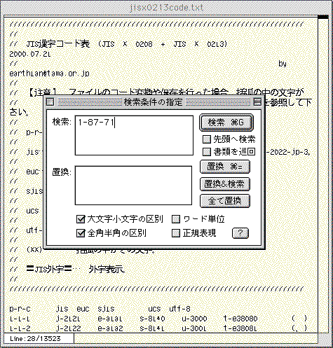
●ここでは第3水準の「牛＋建」を検索しているが、「JIS漢字コード表」には、第3第4水準に加え、第1第2水準の漢字もおさめられている。
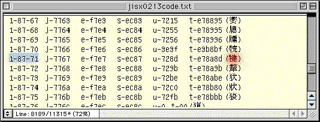
●赤く示したのが、「牛＋建」。
ヒットした行の右はじに、「牛＋建」が確認できるでしょう。
「牛＋建」をコピーし、開いておいたエディターのウインドウにペーストします。
続く「陀」と「多」は共に、第1水準の漢字です。
通常の仮名漢字変換モジュールからも、各モジュールの文字パレットからも、いつも通りのやり方で入力できます。
ただしここでは練習のために、「陀」と「多」も、「JIS漢字コード表」から入れてみましょう。
「JIS漢字字典」（日本規格協会）や、ワープロ用の漢字辞典を持っている方は、「陀」と「多」のコードを調べてみてください。
「陀」は、区点：34-43、シフトJIS：91c9。
「多」は、区点：34-31、シフトJIS：91bdと確認できるでしょう。
新JIS環境では、この内の区点コードの表し方が、少し変わります。
これまで旧JIS漢字の文字は、94×94（計8,836）の升目状の表の中に配置され、区-点の形で示されてきました。
新JIS漢字で新たに追加された文字のうち、第3水準の漢字などは、従来から使ってきた升目の空きにはめ込まれています。
ただし総計11,223の文字はそれだけではおさまりきらず、第4水準の漢字は、もう一つ別に用意された表に配置されました。
新JIS漢字では、都合二つになった表を面と呼び、区-点に代えて、面-区-点の形でコードを示すようになりました。
第1第2水準に加えて、第3までの漢字は1面に、第4水準の漢字は2面におさめられています。
この変更に伴って、従来「34-43」だった「陀」は、新JIS漢字では、1面を表す「1-」を加えて「1-34-43」と、「34-31」だった「多」は「1-34-31」と表現されることになります。
では、「JIS漢字コード表」に戻って、「1-34-43」で検索をかけて「陀」を、「1-34-31」で検索をかけて「多」を検索してください。
見つかったら、コピー＆ペーストでエディターに入力していきましょう。
続いて、「はびあん」も入力してみましょう。
「巴」は、面区点：1-39-35、シフトJIS：9462。
「田＋比」は、面区点：1-86-44、シフトJIS：ebca。
「合の下に廾」は、面区点：1-84-19、シフトJIS：eab1です。
「漢語新辞典」（大修館）は、いち早く新JISに対応し、収録している第1〜第4水準の漢字に、コードを付記しました。
ワープロ用の漢字辞典も、今後は、第3第4水準の文字を収録するようになるでしょう。
今後、第1〜第4水準のコードを調べられる参考図書が、どんどん増えてくるはずです。
青空文庫ファイルの外字を置き換えてみる
現在は外字として扱わざるを得ないけれど、第3第4水準には盛り込まれたものを注記する際、青空文庫ではしばらく前から、面区点番号を添えて示すようにしています。
2000年8月9日に登録された、『百物語』を例に取ってみましょう。
同作品の図書カードで、「テキストファイル ルビあり」をクリックし、ダウンロードしたテキストを解凍してください。
ファイルの冒頭に、【テキスト中に現れる記号について】の解説があります。
外字は、「入力者注」の（例）に見る形で記述してありますから、「※」で検索をかけると、この作品に現れるものすべてを確認できます。
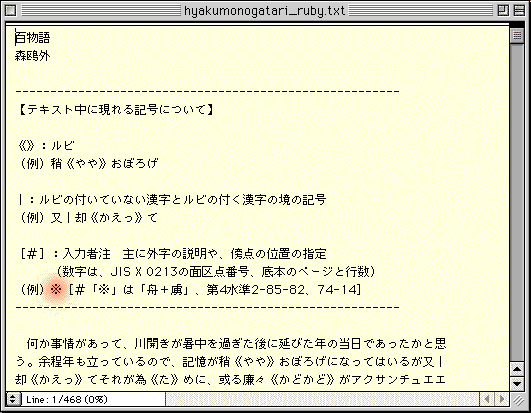
●赤く示した「※」で検索すると、外字を確認できる。
『百物語』には、以下の外字が現れることを確認してください。
※［＃「※」は「舟＋虜」、第4水準2-85-82、74-14］
※［＃「※」は「りっしんべん＋匚＋夾」、第3水準1-84-56、75-12］
※［＃「※」は「口＋耳」、第3水準1-14-94、77-11］
※［＃「※」は「口＋耳」、第3水準1-14-94、78-8］
※［＃「※」は「目＋爭」、第3水準1-88-85、85-10］
※［＃「※」は「口＋耳」、第3水準1-14-94、87-16］
※［＃「※」は「虫＋車」、第3水準1-91-55、88-17］
外字はすべて第3第4水準にあるものばかりで、もれなく面区点番号が添えられています。
ですから、
１ 『百物語』の表示フォントを、Habianに切り替える。
２ 「※」で検索して、外字注記を見つける。
３ 外字注記に示された面区点番号を頼りに、JIS漢字コード表で、検索をかける。
４ 見つかった文字をコピーして、外字注記全体を、その字で置き換える。
という作業を続けていけば、『百物語』から外字を取り除いてしまえるわけです。
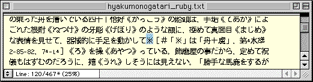
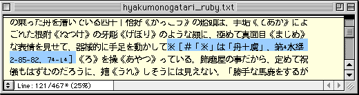
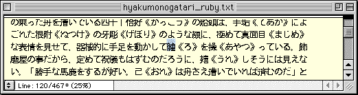
●「※」で検索して外字注記を見つけ（上）、面区点番号を頼りにJIS漢字コード表で検索をかける。ヒットした文字をコピーしておき、外字注記全体を選び（中）、ペーストして置き換える（下）。
部首・画数索引のテキスト版を使いこなす
先に紹介した「新JIS漢字総合索引」の「部首・画数索引」には、もとになった資料があります。
もりみつじゅんじさんが用意し、公開してくれた「radical-tab.txt」です。
使いやすい「新JIS漢字総合索引」ができた今、「radical-tab.txt」を使う意味は、多くの人にとっては薄れたかも知れません。
けれど、「索引」をまとめるにあたって利用したT-Timeは今のところ、WindowsとMacintoshでしか動きません。
他のOSを利用している人にとっては、今後も有効なツールであり続けるだろう「radical-tab.txt」の使い方を、以下で説明していきます。（「新JIS漢字総合索引」が利用できるWindowsとMacintoshの利用者には、以下の説明は多分不要です。「必要ない」と思ったら、【注意が必要な「包摂の扱いが変わる文字」】に進んでください。）
もりみつじゅんじさんによる「JISX0213 InfoCenter」で、「● miscファイル（misc0c23.zip,zip圧縮,523k）」をクリックして、一式をダウンロードし、解凍してください。
解凍ソフトのウインドウに現れたもののうち、「radical-tab.txt」が、部首・画数索引として使えます。
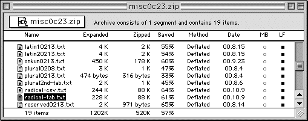
●「radical-tab.txt」を解凍する。「radical-csv.txt」も中味は同じだが、仕立ての違いがあって、「radical-tab.txt」の方が使いやすいだろう。
「radical-tab.txt」を開き、表示用のフォントをHabianに切り替えてください。
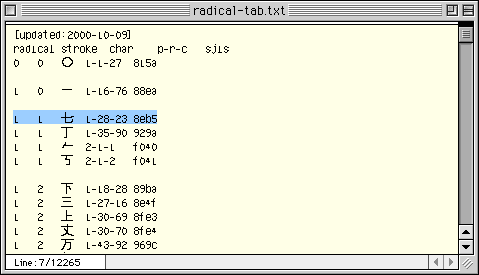
●「radical」が部首、「stroke」が部首内画数、「char」が当該の文字、「p-r-c」が面区点番号、「sjis」がシフトJISコード。康煕字典の214部に存在しない〇画が、このファイルを作成されたもりみつじゅんじさんの判断で、冒頭に付け加えられている。
「radical」と書かれた欄の数字が、康煕字典による部首番号を表しています。
「stroke」とは、部首以外の部分の画数（部首内画数）です。
たとえば「七」という漢字は、部首番号１の「一」の項、部首内画数１のブロックに配置されています。
「七」の面区点番号は、1-28-23、シフトJISコードは、8eb5とわかります。
どの部首の番号が何番なのかを示す「部首一覧」を、以下に示します。
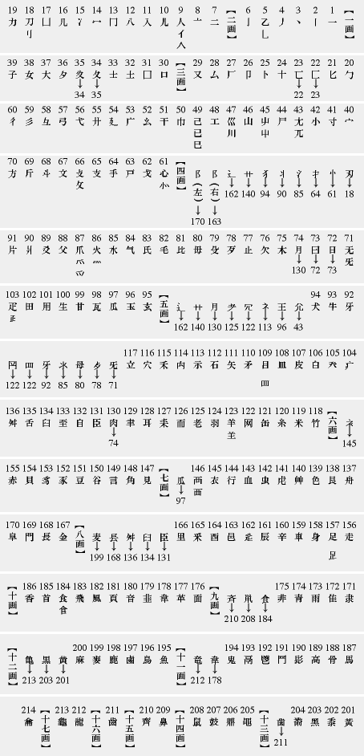
●康煕字典の214部に準じて、部首を画数順に並べた。部首字形が異なり、画数が違っているものは、それぞれの画数の末尾に置いて、矢印で本来の部首番号を示した。加えて、似通っている部首があるものには参照すべき部首番号を、画数を誤認しやすいものには正しい部首番号を矢印で示した。
「radical-tab.txt」と「部首一覧」を組み合わせれば、底本にある文字が第1〜第4水準にあるか否か容易に判定でき、ある場合は、そのコードを知ることができます。
たとえば「牛＋建」の部首は、「牛」です。
「牛」は4画ですから、「部首一覧」の【四画】の項を参照することで、部首番号は93とわかります。
「建」は9画ですから、「radical-tab.txt」で部首（raidical）が93、部首内画数（stroke）が9の所を探していけば、「牛＋建」が見つかります。
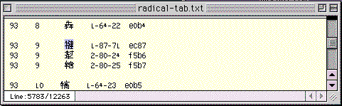
●「部首一覧」と「radical-tab.txt」の組み合わせで、新JIS漢字の文字をたやすく見つけることができる。二つのファイルを組み合わせてリンクを張り、目指す部首番号にジャンプできるようにしておけば、使い勝手はもっと良くなるだろう。
「部首一覧」と「radical-tab.txt」を組み合わせて使いこなせれば、第1〜第4水準の漢字の入力は、これだけで可能です。
「radical-tab.txt」からコピーして、入力テキストにペーストすれば、必要な文字を入れられます。
新JIS漢字には、従来の外字のほとんどを普通の文字として入力できるという、大きなメリットがあります。
その一方で、新JIS漢字に対応したテキストを作るにあたっては、注意を払い、手間をかけて対処すべき問題点が存在します。
注意と対処が求められるものは、「包摂規準」と呼ばれる約束事が、変更された文字です。
「包摂規準」とはなんだろう
印刷物を見ながら入力していると、画面上やプリントアウトの文字の形が、もとのものと微妙に異なっていて、「この字で入れて良いのだろうか？」と不安になることがあるでしょう。
もとのしんにゅうには点が二つあるけれど、入力した方には一つしかない。底本の草冠は横画の間が切れているように見えるけれど、入力したものは繋がって見える、といった場合です。
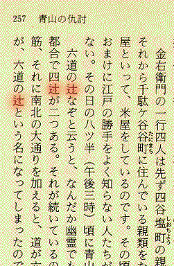
●「時代推理小説 半七捕物帳（五）」光文社文庫、「青山の仇討」に現れる、二点しんにゅうの「辻」。
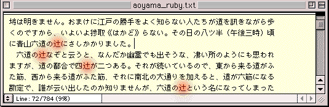
●一方、入力したテキストでは、「辻」は一点しんにゅうで表示されている。青空文庫所蔵の「青山の仇討」テキスト版より。
同じ字と思われるものの点画が、底本にあるものと入力したものとで微妙に異なって見えるケースでは、そのコードで入れて良いのか、それとも異なった字としてとらえてもとの形により近いものを探し、それでも見つからなければ外字として処理するのか、態度を決めなければなりません。
こうした時、判断の目安となってくれるのが、JIS漢字コードが定めている「包摂規準」です。
包摂規準とは、特定の点画の差異によってコードを区別するかしないか定めた、約束事の集まりです。
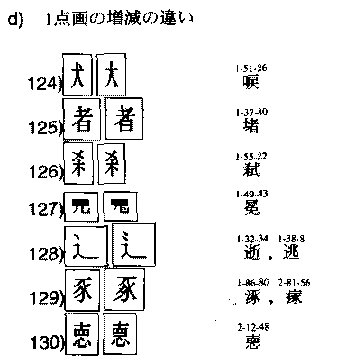
●JIS漢字コードは、包摂規準128によって、しんにゅうの一点と二点でコードを区別しないと定めている。青空文庫は、JISの包摂規準に沿って電子化を進めている。それゆえ、半七捕物帳の底本にある二点しんにゅうの「辻」は、一点しんにゅうのコードで入力してかまわない。
旧JIS漢字では、「こうした差によってコードを区別しない」という決めごとが185項目示されていました。（JIS X 0208規格票「6.6.3.2 漢字の字体の包摂規準の詳細」）
加えて、過去の規格改訂時に生じた混乱を収束させるための例外措置として、特に29字に関して特別な包摂の決まりが設けられました。（同「6.6.4 過去の規格との互換性を維持するための包摂規準」）
これらは「本来ならコードを分けるべきなのだけれど、やむを得ず分けないことにする」とされていたのです。
第1第2水準と組み合わせる第3第4水準を決めるにあたっては、まず最初に、これまであった包摂規準には変更を加えないという方針が確認されました。
ただし、例外の29字に対する特別措置は、新JIS漢字では、廃止されることになりました。
「78互換包摂」と呼ばれていた特別措置が廃止されるのは、以下の29字です。
唖焔鴎噛侠躯鹸麹屡繍蒋醤蝉掻騨箪掴填顛祷涜嚢溌醗頬麺莱蝋攅
ここに示す、これら29字のＢのパターンは、新たに独立したコードを与えられました。
加えて、以下の104字に対しても、包摂規準の適用が除外されました。
侮併僧免勉勤卑即喝嘆器塚塀増墨寛層巣廊徴徳悔慨憎懲戻掲撃敏既晩暑暦朗梅概横欄歩歴殺毎海渉涙渚渇温漢瀬煮状猪琢瓶研碑社祉祈祐祖祝神祥禍禎福穀突節緑緒縁練繁署者臭著薫虚虜褐視諸謁謹賓頼贈逸郎都郷録錬隆難響頻類黄黒
ここに示す104字のＢのパターンは、新たに独立したコードを与えられました。
これら104字のＢのパターンのほとんどは、当分の間、人名に用いることができるものとして、「人名漢字許容字体表」に掲げられているものです。
法令が使用を認めているものは、JIS漢字コードでも別個に表現できるようにしようという狙いから、包摂規準の適用が除外されることになったのです。
旧JIS漢字と新JIS漢字の包摂に関する規定は、「JIS X 0208と0213規格票の包摂関連項目」で参照できます。
包摂の扱いが変わる文字への対処
これまで青空文庫では、旧JIS環境の包摂規準に従って、入力作業を行ってきました。
現在も、旧JISの包摂規準に従うという方針には、変更はありません。
78互換包摂29字のＢパターンは、これまでどおり、上に示した字体のコードで入力します。
新JIS漢字では、包摂規準の適用が除外される104字のＢパターンも、これまでどおりのコードで入力します。
一方新JIS環境では、これらの文字に関しては、包摂の扱いが変わります。
これまで作ってきたファイルを新JIS環境に移し替えようとする際には、何らかの対処が必要になります。
森鴎外の「鴎」の字を例に、移行に際してどのような作業を求められるか、考えていきましょう。
「鴎」は、旧JIS漢字において、互換包摂が適用される文字です。
「区＋鳥」と「區＋鳥」のコードは、同じとされます。
一方新JIS漢字では、「區＋鳥」に新たなコードが与えられました。
「新JIS漢字総合索引」もしくは「JIS漢字コード表」で、確認してください。
「区＋鳥」は、面区点：1-18-10、シフトJIS：89a8。
「區＋鳥」は、面区点：1-94-69、シフトJIS：efe3。
となっているでしょう。
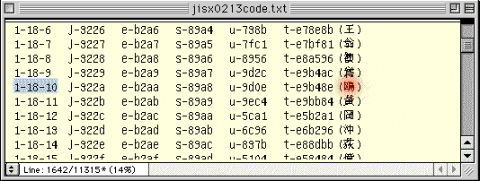
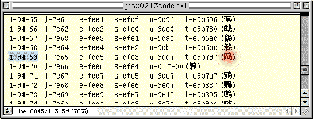
●「JIS漢字コード表」で確認してみた例。上で赤く示したのが、「区＋鳥」。下で赤く示したのが、「區＋鳥」。
青空文庫は作業上の大原則として、「JIS漢字コードの包摂規準の枠内で、底本に忠実な入力を行う」という方針を掲げています。
底本の多くは、森鴎外の「鴎」に「區＋鳥」を使っていますから、この方針を、新JIS環境への切り替えにあたっても貫こうとすれば、「鴎」の見直しが必要です。
それまで入力してきたすべてのファイルに関して、「鴎」の字が使われていないかあたり直し、もし使われていれば、あらためて底本と照合し、それが「区＋鳥」なのか「區＋鳥」なのかを確認し、必要なら修正しなければいけません。
出版の世界では、従来、「区＋鳥」は俗字と位置づけられ、ほとんど使われてきませんでした。
「區＋鳥」への修正が必要になる可能性は、きわめて高いのです。
互換包摂の29字。適用除外の104字。加えて、包摂の扱いが変わった記号が二つで、計135文字。
これらすべてを、これまで作ってきたファイルの中で見つけだしていくことは、気の遠くなるような作業となるでしょう。
文字チェッカー
作品ファイルの中から、包摂の扱いが変わった文字を見つけだす支援ツールとして、結城浩さんが文字チェッカーを作ってくれました。
将来の新JIS漢字への移行に際して、必要となる書き換えをどう進めていけばよいか、かつては作業手順を思い浮かべることができませんでした。
ところが、「文字チェッカー」によって、一気に展望が開けました。
先ほど青空文庫からダウンロードしてきた、森鴎外『百物語』を使って「文字チェッカー」の働きを確認していきましょう。
１ ここをクリックして、文字チェッカーを開きます。
２ チェックしたい文章を開き、すべてを選択してコピーしてください。ここでは『百物語』を例として用いますから、この作品の全文をコピーします。
３「テキストを入力してください（シフトJISのみ有効）。」と書かれたウインドウの中にカーソルを立てて、先ほどコピーした文章をペーストします。
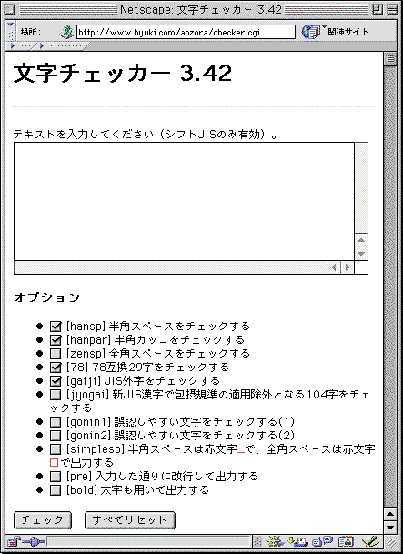
●文字チェッカーは、青空文庫の作業者の声を入れて、改良が重ねられている。
４ オプションで、何をチェックするかを選びます。
ここではまず、78互換包摂の29字だけをチェックしてみましょう。
文字チェッカーを開いた段階では、何をチェックするか選ぶオプションは、上の図のように設定されています。
このうち、「[78] 78互換29字をチェックする 」以外に付いているチェックマークを、クリックして外します。
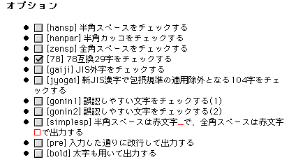
●さまざまなチェック項目を設定でき、OCRが誤認識しやすい文字も調べられる。「太字も用いて出力する」は、白黒のモニターで作業する人のために加えられた。
５ 左下の「チェック」をクリックします。
６ しばらく間があって、チェックした結果が次のように表示されます。
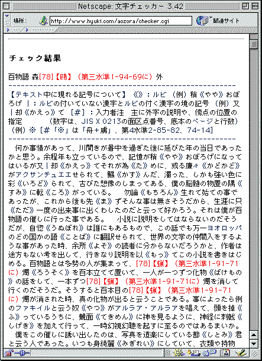
●冒頭の「鴎」にチェックが入り、78互換包摂の文字であることが示される。加えて、修正候補である「区＋鳥」の面区点番号1-94-69が表示される。包摂の扱いが変わる文字を漏れなく確認していくことは、文字チェッカーなしでは不可能である。
７ 78互換包摂の29字が赤く表示されますから、底本と照合し、修正すべきか否か確認して、必要があれば、ファイルを改めます。
同様に、オプションから「[jyogai] 新JIS漢字で包摂規準の適用除外となる104字をチェックする」を選べば、包摂規準の適用が新たに除外されるものをチェックできます。
一般には、78互換包摂のＡのパターン（「●やむを得ず包摂するとされていた29字」参照）は、高い確率でＢへの書き換えが求められるでしょう。
一方、包摂規準適用除外のAのパターン（「●包摂規準の適用を除外される104字」）は、新字新仮名の底本を用いたファイルでは、書き換えの確率は低く、旧字旧仮名の底本を用いたものでは、書き換えの確率が高くなると予想されます。
オプションから、「[gaiji] JIS外字をチェックする」を選べば、旧JIS漢字コードの符号表の隙間に、これまで各メーカーが独自に（勝手に）割り振ってきた、いわゆる機種依存文字をチェックできます。
新JIS漢字コードでは、旧JISの符号表の隙間に、新しい文字が割り振られました。
そのため、機種依存文字を含む文書を新JISで開くと、かつての〈空き屋〉を占有していたこれらの文字は、入力者の意図とは無関係の文字に化けてしまいます。
こうした文書を新JIS環境に引き継ぐ際には、あらかじめ機種依存文字を洗い出し、入力者が何の字を入れるつもりだったのかを判断した上で、コードを与え直してやる必要があります。
こうした作業に際しても、文字チェッカーは力強い味方になってくれるでしょう。
・本文中では、新JIS漢字で包摂の扱いが変わるものを「135字」と書きました。78互換包摂の29字、包摂規準の適用が除外される104字。加えて、ダブルクォーテーションマーク（「“」「”」）の縦書き用字形に包摂されてきたダブルミニュートが、独立したコードを与えられたので、この左（始め）用と右（終わり）用を加えて、つごう135字と数えた次第です。
・新JIS漢字では、新たに14項が加えられ、包摂規準はつごう199項目となりました。
戻る。